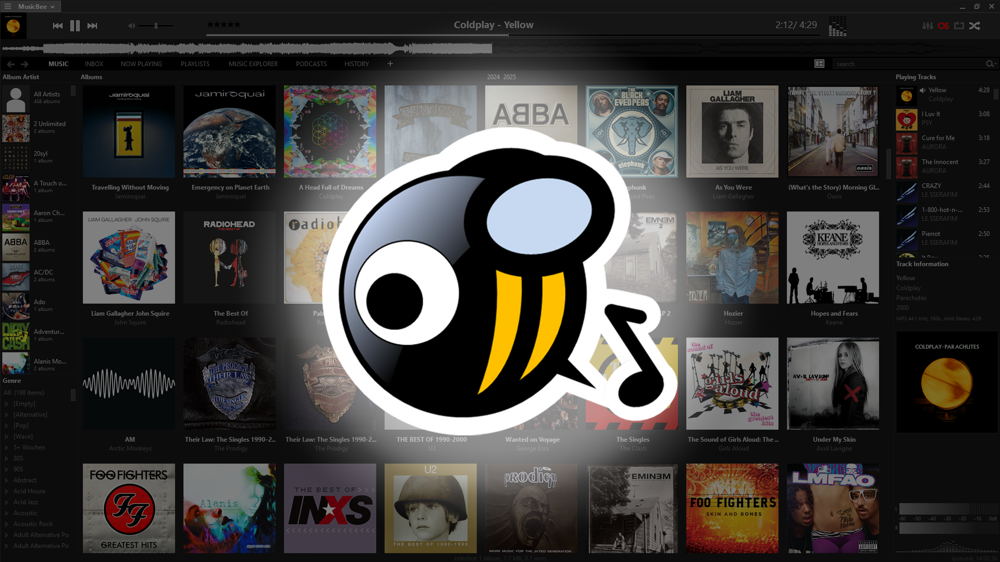

Organising My Music Library With Musicbee
Posted on June 18th, 2025
Written by IntelStellar
Having a large music library can sometimes make organising, syncing and adding new music a pain if not done correctly, so here's how I set up a handy piece of software called musicbee to do it all for me.
Why Musicbee?
One of the reasons I like musicbee is that it looks really nice, syncs to my rockbox'd iPod, scrobbles to last.fm and is really configurable / flexable. It also looks really nice, and has dark mode, already better than iTunes. Seriously, people make this software look amazing. It's also a lot faster than iTunes, which has always been slow and just awful to use.
How I set it up:
I have musicbee set up to automatically sort my music library, sort new music and sort CD's ripped with the app. I can just drag and drop a folder of new, unorganised music into my music library folder, hit "Scan Folders For New Files", and just let the app do it's thing. All music must be tagged though, but this can easily be done with an app like mp3tag.